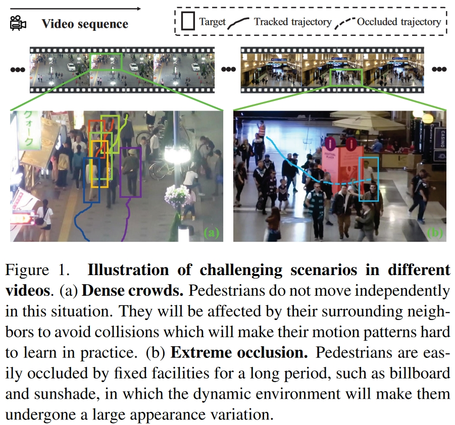

贴一下原文链接
以及代码链接
1.Abstract
作者认为多目标跟踪的主要挑战在于为每一个目标保持一条连续的轨迹。现有的方法往往通过运动特征与外观信息进行进行匹配，但是这两种特征容易受到密集人群和极端遮挡的影响。因此作者提出一个跟踪器名为Motion Track，在统一的框架中学习鲁棒的长期和短期轨迹。构建了新的交互模块与重寻模块，并在MOT指标中达到了SOTA。
2.Introduction
现有的MOT方法主要遵循两种范式：TbD与TbR。
TbD（Tracking by Detection）：首先在每个视频帧中检测目标，然后在相邻帧之间进行关联检测。
TbR（Tracking by Regression）：目标检测器不仅提供逐帧检测，而且将数据关联替换为每个轨迹点对新位置的连续回归。
但是这两种方法都要面对短期轨迹与长期轨迹的关联问题。即如何在短时间内将活跃的轨迹与检测进行关联，以及如何将长时间后即将丢失的轨迹片段与检测进行重新识别。

对于短期关联： 通常会学习具有判别性的运动特征和外观特征进行相邻帧之间的数据关联。但是密集人群中很难学习到具有判别性的特征。一是因为bbox太小，无法通过外观区分；二是人群会改变运动轨迹以避免碰撞，使得运动特征十分复杂。
对于长期关联： 通常会学习具有判别性的外观特征对丢失的目标进行重新识别，但是低光照、低分辨率、不同姿态会对这一特征产生巨大的影响。为了缓解这一问题，使用了内存技术存储每个目标的不同特征，以多查询的方式匹配不同的目标。但是存储模块和多查询机制占用大量内存和时间，不利于实时跟踪。
因此作者提出了Motion Track，对于短期关联，学习目标之间的交互作用，用于预测密集人群下的复杂运动，对于长期关联，通过相关计算和误差补偿两个步骤，对丢失的轨迹和未匹配的检测进行相关性计算，之后进一步采取误差补偿对遮挡轨迹进行修正。
3.Method
3.1.1 短期关联
给定的视频帧t，首先获得检测结果Dt，截止至t-1帧共有M个轨迹T的集合，其中有S个丢失的轨迹Tlost。计算迭代偏移Ot $\in$ RM $\times$ 4，其中每一行包含t-2帧到t-1帧的中心坐标与宽高的偏移量。将绝对坐标与偏移量串联得到It $\in$ RM $\times$ 8作为交互模块的输入。
3.1.2 交互模块
利用自注意力机制得到注意矩阵Aatte，用于测量每对轨迹之间的交互幅度：
其中$\phi$（·，·）表示线性变换，Et是由It映射出的高维嵌入。Qt $\in$ RM $\times$ D和Kt $\in$ RM $\times$ D是自我关注机制的查询和密钥。WE，WQ，WK是线性变换的权重。$\sqrt{d}$和$\sqrt{D}$ 是缩放因子。注意力矩阵Aatte中的 (i,j) -th 用于表示轨迹i对轨迹j的影响。
为了更好的表示群体行为，作者通过非对称卷积模拟一群轨迹对单个轨迹的影响：
最后只保留Aadjc中大于 $\xi$ 的元素：
其中 sgn 是符号函数，$\delta$表示PReLU，⊙表示哈达玛积，即逐元素乘积。最后将Aadjc所有非零元素进行归一化。
提取轨迹之间的交互作用后，使用图卷积对每个轨迹的交互进行融合，然后使用多层感知器（MLP）进行预测：
其中WG是线性变换的权重。预测值Poffs $\in$ RS $\times$ U将与Dt一起用于IoU的关联。
3.2.1 长期关联
假设短期关联后有S个丢失的轨迹和U个未匹配的检测。作者根据轨迹的空间分布和速度-时间关系，计算S个丢失的轨迹和U个未匹配的检测之间的相关性，得到相关性矩阵Icorre $\in$ R[0，1]S $\times$ U。然后保留高度相关的轨迹-检测对，并利用误差补偿来完善轨迹。
3.2.2 重寻模块
将预测的轨迹的位置与检测进行IoU匹配，如果匹配结束还有S个丢失的轨迹和U个未匹配的检测则进入重寻模块。
剩余的检测集合记为Drest $\in$ RU $\times$ 5，其中五个元素分别是（t，x，y，w，h），保留30帧的历史轨迹的信息，于是仍未匹配的轨迹记为Tlost $\in$ RS $\times$ 30 $\times$ 5。首先在最后一个维度上对Drest和Tlost进行规范化，然后分别从中提取特征。作者分别在第二和第三维对Tlost进行非对称卷积，然后将它们汇集成特征向量Ftraj $\in$ RS $\times$ D：
对于计算的结果，计算与最后存活的位置的差值，并与检测结果联合起来，得到 $\hat{D}$ rest $\in$ RU $\times$ 10，然后将其映射到高维特征Fdete $\in$ RU $\times$ D：
其中WD是线性变换的权重。
随后将Ftraj和Fdete结合在一起形成F $\in$ R（S $\times$ U） $\times$ 2D，应用一个全连接层和sigmoid函数，就可以得到轨迹和检测之间的相似度得分Ccorr $\in$ RS $\times$ U，最后，作者使用贪心算法挑选出相关度高的匹配对，并将剩余的不匹配检测初始化为新的轨迹。
在用匹配检测重新识别丢失的轨迹后，作者使用误差补偿修正了预测的轨迹：
4.Training
对交互模块，根据偏移量的预测计算出绝对坐标，使用IoU损失的形式：
取了连续三帧作为一个sample，前两帧是网络的输入，最后一帧作为监督Pgt。
对于重寻模块，在一段完整视频中提取所有的帧，将他们随机配对作为训练集，对于每个训练集，我们对轨迹和检测进行采样，并根据它们是否来自相同的轨迹标记为正或负。然后，我们用一个二元交叉熵损失函数来监督Refind模块中的相关计算:
最终效果：